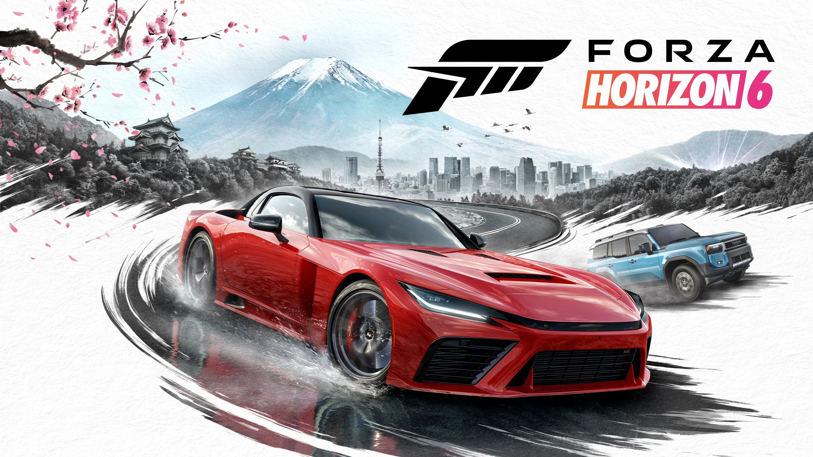
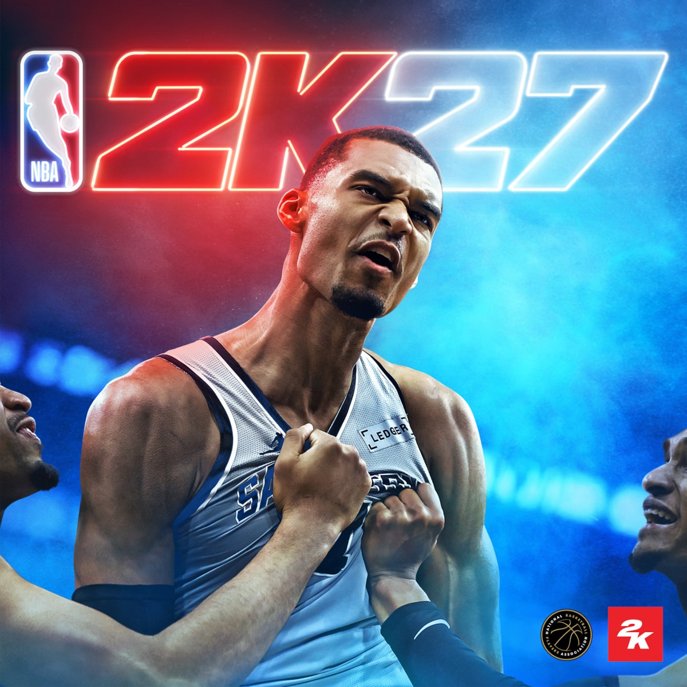

LIFE IN
PLAY.
四个世界，一个玩家。
赛道的红线、公路的日落、球场的深夜。这里收藏我的另一种热爱，也留下一点认真玩过的痕迹。
速度，不止一种颜色。
红色跃马、木瓜橙与银箭。2026 赛季的真实赛车，让这间游戏房间也有一条起跑线。
STEAM 本地记录有日期的本机快照
我的赛道时间
- 累计游玩
- …STEAM / TOTAL
- 近两周游玩
- …STEAM / 2 WEEKS
- 最近启动
- STEAM / LAST PLAYED
- 保存的回放片段
- …LOCAL / HIGHLIGHTS
最新存档记录
02 / FESTIVAL FREQUENCY日本へようこそ
FORZA HORIZON 6™
开放世界 / 日本 / 兜风
下一站，不急着抵达。
拐进东京的霓虹，或者干脆往山的方向开。喜欢赛车，也喜欢在一场比赛之外，停下来看看风景。
TOKYO35°40′ / 139°45′
DRIVE. EXPLORE. REPEAT.
DRIVE. EXPLORE. REPEAT.

FRAME / 01HORIZON / JAPAN
车库手记
私人驾驶手记历史快照01 / GARAGE—车库车辆
02 / COLLECTION—不同车型
03 / PHOTO BOOK—已拍摄车型
最新存档记录
03 / AFTER DARK ARENATHE LIGHTS STAY ON

STANDARD EDITION / 20262K
NBA 2K27
篮球 / 生涯 / 再来一场
灯亮着，就再打一场。
从现实里的篮球场，到屏幕里的最后一投。喜欢库里，喜欢篮球，也喜欢那种投出去之后，等着球落进篮筐的瞬间。
球场灯光
STEAM 本地记录
PLAYER / CHEFZC我的上场记录
累计游玩—HOURS / MINUTES
近两周游玩—
生涯存档—
自定义阵容存档—
最新存档记录
SAVE POINT / 003
每个数字，都有来处。
这里是有日期的个人游戏记录，不是实时排行榜。只展示能核实的数字，让热爱有自己的时间线。
查看数据来源与读取状态
STEAM / 我的飞行记录
按 Steam 客户端实际写入同步；游玩时长通常在结束游戏后更新。电脑离线时保留最近记录。
查看 AC8 公开同步数据F1 25 本次读取
FH6 / NBA 2K27 上次读取
视觉致谢
F1 / 2026 Team GalleriesForza / Playground GamesNBA 2K / Visual Concepts
游戏图像与商标归各自权利人所有。这里是我的个人游戏房间。
下一局见。回到个人介绍